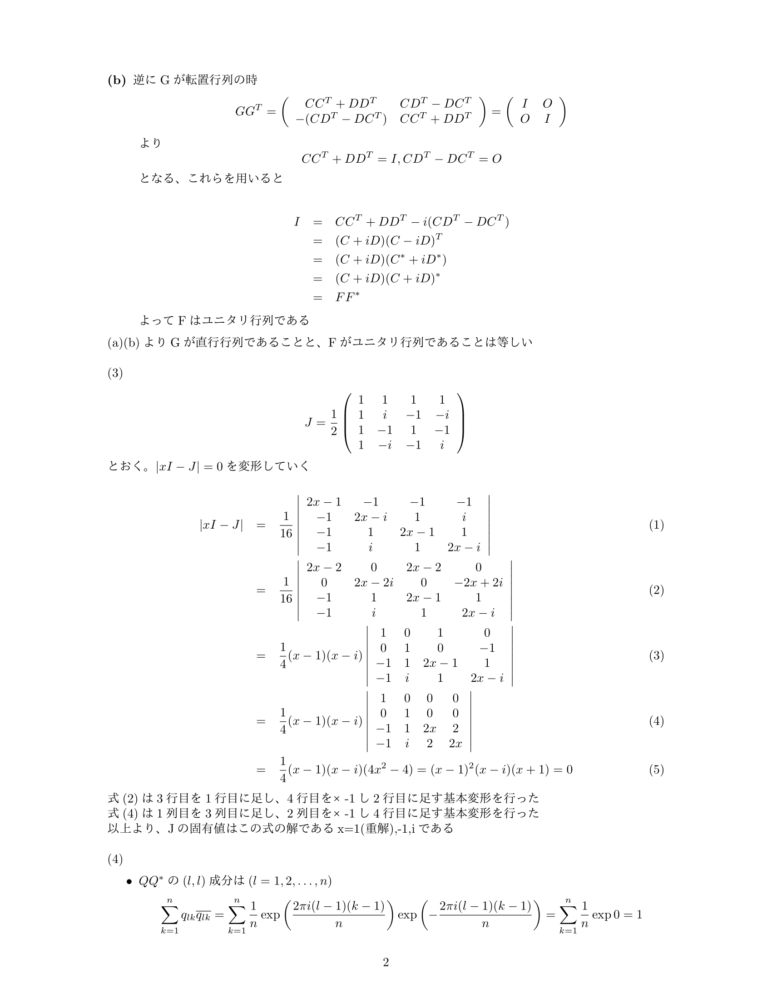

たつみの院試道場
院試の過去問解答が手に入らない外部受験者などのために解答を作成し、販売しています。
現在、東京大学情報理工学系共通数学のみですが、順次追加していく予定です
- サンプル、こだわり
- 解答の販売を行っています
- 未収集の解答の買取も行っております
- 作成済み、及び募集中のリストです
- 購入の際の注意事項
- 僕のプロフィールです
サンプル、こだわり
東京大学情報理工学系 共通数学
2018年度実施の第一問の途中まで掲載しています
こだわりポイント
- Latexを用いた美しいフォーマット
- キーワードと参考図書、参考URLを載せており、院試に向けた勉強をサポート
- 各問題ごとの解説、難しい場合部分点を取るための解答なども解説

解答の購入を希望される方
Twitterアカウント(@guretat)のDM
もしくは guretat0{at}gmail.com (※{at}は@に変換) まで以下の情報をお送りください(名前などの個人情報は不要です)
また、購入の際の注意事項は必ずお読みください
- 必要な院試解答の種類(ページ下の作成済みリストから選んでください)
- 院試の解答を受け取るメールアドレス
- 以下のどちらかの方法で入金した際の、入金したアカウントの名前と支払い日時
-
paypay支払いの場合、(ID:guretat)で検索し、ページ下の作成済みリストにある金額を入金してください
-
paypal支払い(現在、銀行口座からの支払いが可能です。クレジットカードは対応予定です)の場合は
このリンクからリストに表記してある金額お支払いください
-
上記二つの方法で払えない場合は、銀行振込に対応するのでその旨をお問い合わせください。ただしその場合安全のため、個人情報を要求させていただきます。また、私は基本東大にいるので、東京に来れる方は東大に直接来て取引いただくことも可能です。ご希望の場合はそのようにお伝えいただければよいです。ただしpaypayのアカウントを開設し、セブン銀行や銀行口座からチャージするのが最も簡単であると思われます
解答の販売を希望される方
解答募集中にあるリストの解答をお持ちの方は、購入と同様
Twitterアカウント(@guretat)のDM
もしくは guretat0{at}gmail.com (※{at}は@に変換) までご連絡ください。
法律上の問題(著作権が誰に属しているか)を確認後、買取いたします。買取価格は解答の質、大学院の受験者数、外部比率などによって見積もらせていただきます。
作成済み
- 東京大学
- 情報理工学系研究科 共通数学 3500円(過去5ヵ年、ただし2019年度実施分に関しては、大学院の公式サイトで問題公開以降、購入者に再度配布します)
解答募集中＆作成予定
()内に(解答として問題はない最低ライン～Latex等の作成の丁寧な解答)の見積価格を表示しています。解答として問題がなければ、手書きでも買い取ります(ただし安価になります)
基本的に、大学院の公式HPで過去問が公開されている年数分の解答を募集します
高額での買取を希望の場合は著作を譲渡していただく形になるので、著作権がご本人様にある場合(例えば、自分で作成した解答である)でなければ取引いただけません。ただし、そうでない場合でも比較的安価での買取なら対応いたします
- 東京大学
- 新領域 各専攻 5,000円～30,000円
- 情報理工学系 各専攻 専門科目 5,000~20,000円
- 東京工業大学(予定)
- 京都大学(予定)
購入の際の注意事項
- 解答には、最大限ミスがないよう気をつけておりますが、個人が作成した以上間違えがあります。見つけていただいた場合プロフィールに載っている連絡先までご連絡いただけると幸いです
- 解答に関する質問は基本的に受け付けません
プロフィール
ハンドルネーム：たつみ
所属：東京大学大学院 情報理工学系研究科 数理情報学専攻 博士前期課程在学
Twitterアカウント：@guretat
メールアドレス：guretat0{at}gmail.com(※{at}は@に変換)
数理系全般が好きな大学院生です。主に外部受験の人を支援するためにこのサイトを立ち上げました